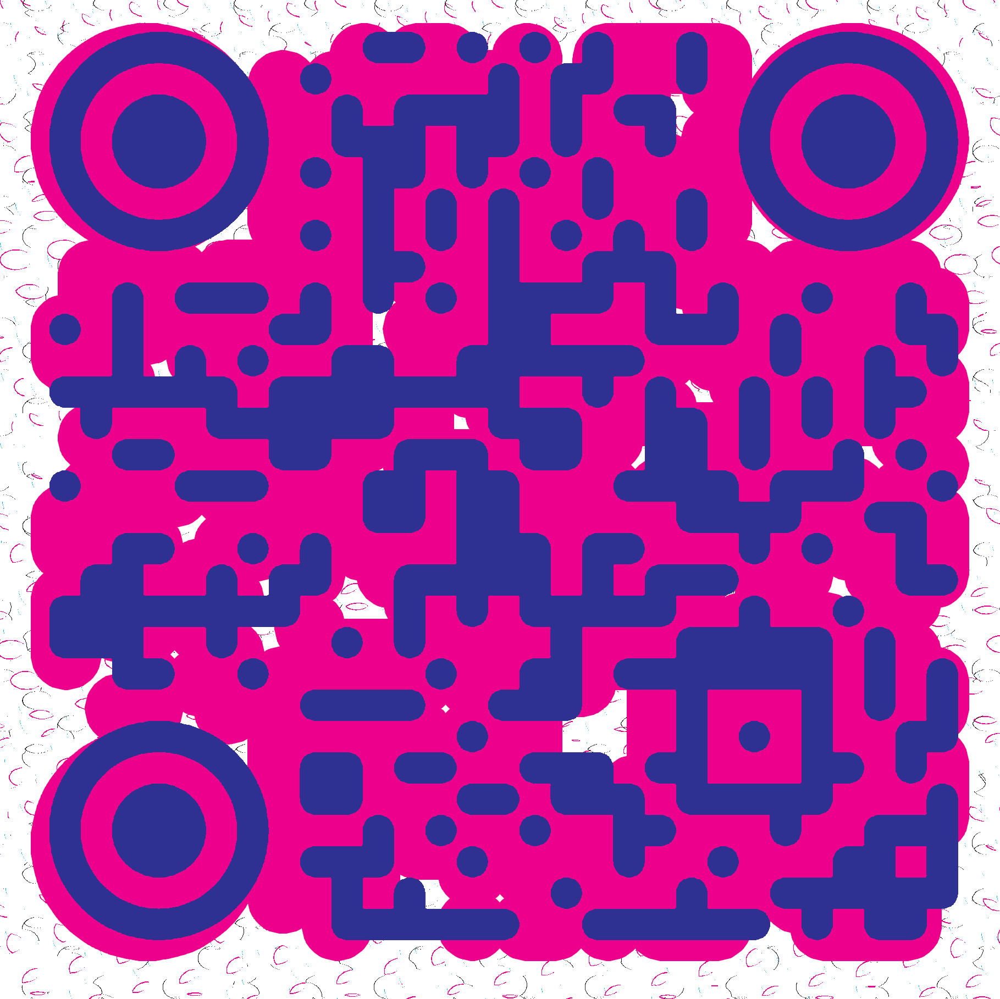
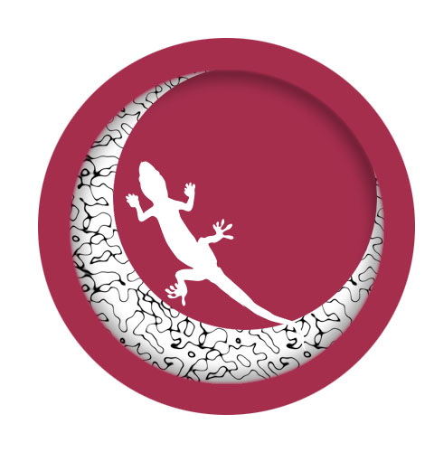
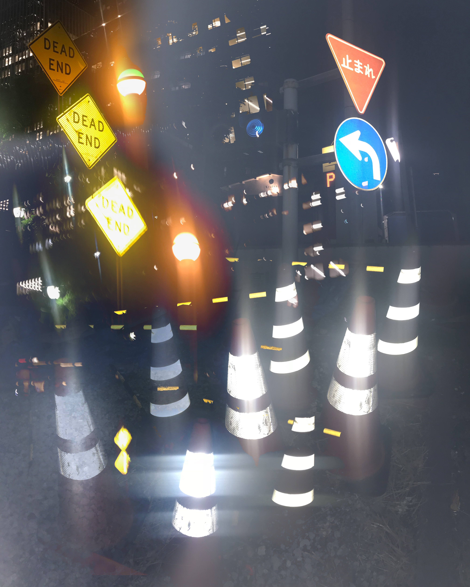

Hey God
This is me.

My favorite anime is 夏目友人帳.
This is me.
My favorite anime is 夏目友人帳.
Here's the link:
 https://discord.gg/wCQZGEjWCyYou can keep up with me here.
I'll make a post every now and again.
Where is Arthur?
I can't sleep tonight.
Here are some logo designs I did back in highschool:
We were leaning about fashion brands.
Here's what they look like:
I made this for a uni class.
It's called Big Chess:
Big Chess. Cheese. Batteries. Lunch box, Table pairs and weird chalks. What's his name? I forgot. Red rooms, Sword balloons. Glass Goldfish on the wall. Being careful not to fall. Ribena without a straw. Big Chess. Trees. Trampolines. Baloneys. Neon colors when you walk. Hidden places, Secret talk. Showing off. Concrete corner. Moving on. Moving forward. Say goodbye. You're gonna die. It'll be fine. Dude look, I can eat poison!
This is a "Singleframe Narrative":

It shows a time I nearly died.
I Remember
I remember having friends who could eat poison. I remember trying to see how long I could hold my breath underwater, and never quite being able to last long enough. I remember sand on the beach and swimming out so far into the water that the waves consume you and people look like tiny dots on the horizon. I remember being fascinated by metal detectors. I remember how it felt to climb a tree back when you were smaller than most everything around you. I remember when I discovered my favorite author. I remember when I found out that Simon had decided to start "living life as a person". I remember how conflicted I felt. I remember dreaming about meditation and stealing pens. I remember the daunting presence of the window in my rooms, every one of them. I remember when I went to see the wishing tree. I remember not knowing how to feel when my grandfather died. I remember a beautiful sunset. I remember realizing how lost I felt in most normal situations. I remember closing my eyes for a split second and opening them again to find I had been asleep for hours. I remember being naive and not realizing how most things come to an end and that that is natural. I remember really liking bananas. I remember when I stopped liking bananas. I remember wondering about my end. I remember when I started liking bananas again. I remember going back and searching for the poison only to find it wasn't there anymore.
Join the alien race.
The Rat Race.
The Rat Race Is.
Yes It Is.
Yes It Is.